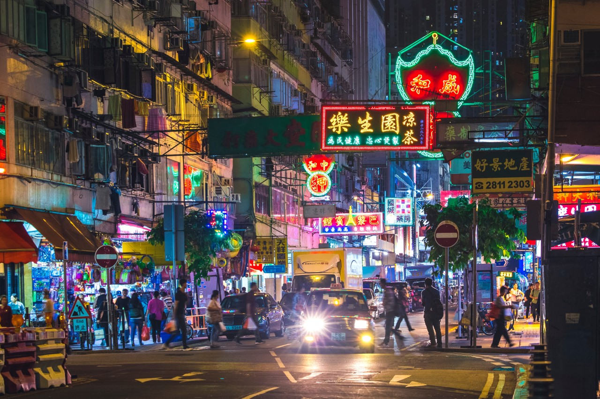
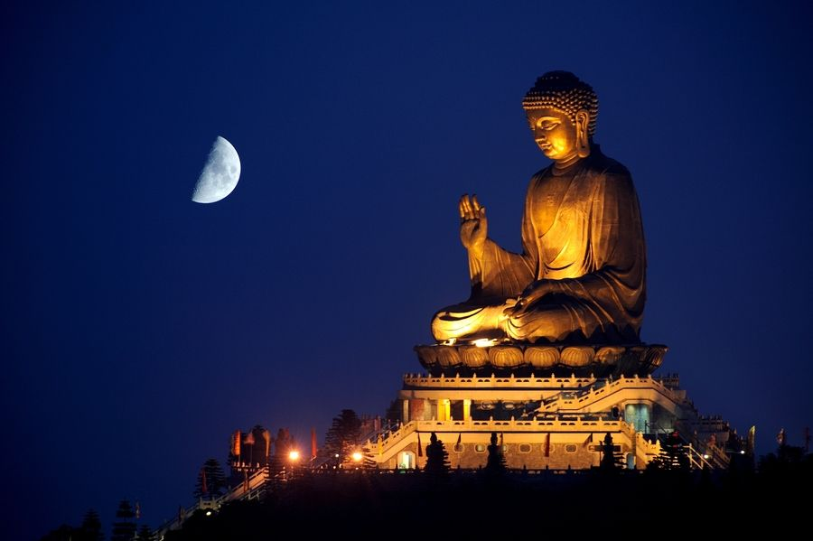

HONG KONG
Known as “Asia’s World City”, Hong Kong is one of the continents busiest and culturally diverse cities. Everything from tall skyscrapers, to bustling markets, and buddha statues can be found on tiny yet densely populated harbor city. Serving as a meeting point for western and eastern culture for centuries, it is unlike any other city in the world due to its unique cultural blend. A long-standing British colony Hong Kong was returned to China in 1997 and has served as a special administrative region since. Not subject to the same laws and regulations as mainland China, Hong Kong has maintained and facilitated the further growth of its city as a major trading and business center.
The trip to Hong Kong before the pandemic would have been relatively simple since the country did not even require a visa for U.S. citizens but that has changed. Due to the pandemic, strict regulations have been put in place restricting travel to Hong Kong. Entry restrictions apply to all tourists and non-residents traveling to Hong Kong from outside of China, Taiwan, and Macau. If you are still able to travel there, there are still quarantine rules in place. Some of the restrictions are:
- A 21-day quarantine if you’re arriving from a list of “high risk countries”.
- Travelers have to take a nucleic acid test for Covid-19 72 hours before departure.
- Must have a quarantine hotel reservations confirmation on landing for the entire quarantine period at travelers' expense.
- Brazil, United Kingdom, Ireland, and South Africa are all considered extreme risk and anyone who spent more than two hours are not permitted to enter Hong Kong

Due to the severity of the restrictions, travel to Hong Kong while the pandemic is happening is very unlikely. If you do get to travel to Hong Kong after the pandemic is over, however, the city is filled with incredible sights, wonderful food, and a unparallel night life. Some of the places you can stay in Hong Kong that would be convenient not only for its access to world class food but transportation through the city is Tsim Sha Tsui. Tsim Sha Tsui, also known as TST to locals, is the waterfront area that is so distinguishable from all the photos of Hong Kong’s skyline. There you will be able to find a wide range of activities from shopping at designer stores to eating local street food at night markets. If you are looking for a more insouciant Hong Kong experience, then maybe you would prefer to stay south of Hong Kong island or the Tai Po area where there is a lot of opportunities for hiking, camping, and water sports. A less popular option for a Hong Kong trip but just as acceptable of a way of enjoying this wonderful city.
While in Hong Kong some of the specific spots to go to include The Ladies Market in Mong Kok, Lan Kwai Fong in Central, and The Big Buddha on Lantau Island. Mong Kok is one of Hong Kong’s historical districts known for its outdoor markets – from fruit stalls to cheap souvenirs to knockoff designer clothing, walking through the markets is a unique experience where you will find locals bargaining with vendors and tourists getting ripped off. Lan Kwai Fong is Hong Kong’s main nightlife district – what makes it so unique is the plethora of people that gather here at any night of the week. The city’s huge international status makes it so that no night is a dull night, and you will probably meet people from all over the world, from all walks of life. Lastly, The Big Buddha is one of Hong Kong’s well known tourist spots – the giant bronze statue symbolizes the harmonious relationship between man and nature, a perfect reflection of the city as a whole.
